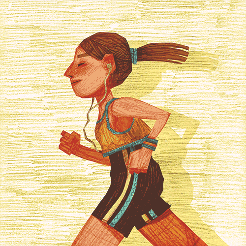

Hidrata Alerta - Solução
°
CSP
Recomendações
A temperatura está aumentando. Importante: não esqueça de se hidratar.
Recomendamos pelo menos dois litros de água ao dia.
Evite exposição direta ao sol: Procure sombras ou ambientes fechados, especialmente entre as 10h e 16h, quando a intensidade do sol é maior.
Evite atividades físicas intensas ao ar livre: Se necessário, faça exercícios nas horas mais frescas, como manhã cedo ou no fim da tarde.
Apesar de não estar quente, não esqueça de se hidratar.
Recomendamos dois litros de água ao dia.
Proteja-se contra o vento e a umidade: Essas condições podem aumentar a sensação de frio. Use roupas que ajudem a bloquear o vento e mantenha-se seco.
Cuidados especiais para idosos e crianças: Essas pessoas podem ser mais sensíveis ao frio, então esteja atento e garanta que estejam bem aquecidas.